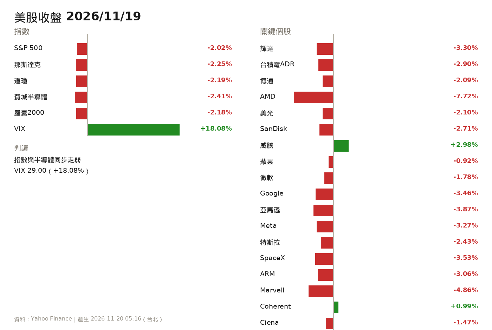
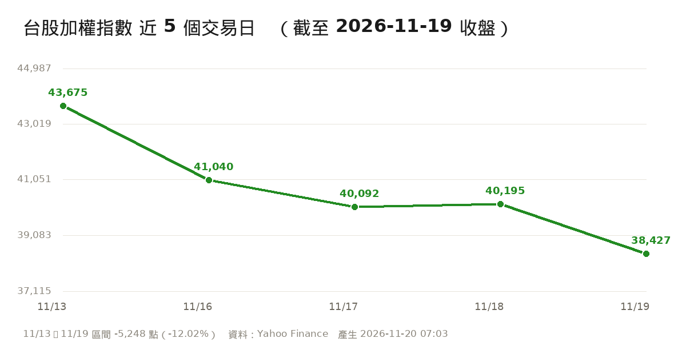
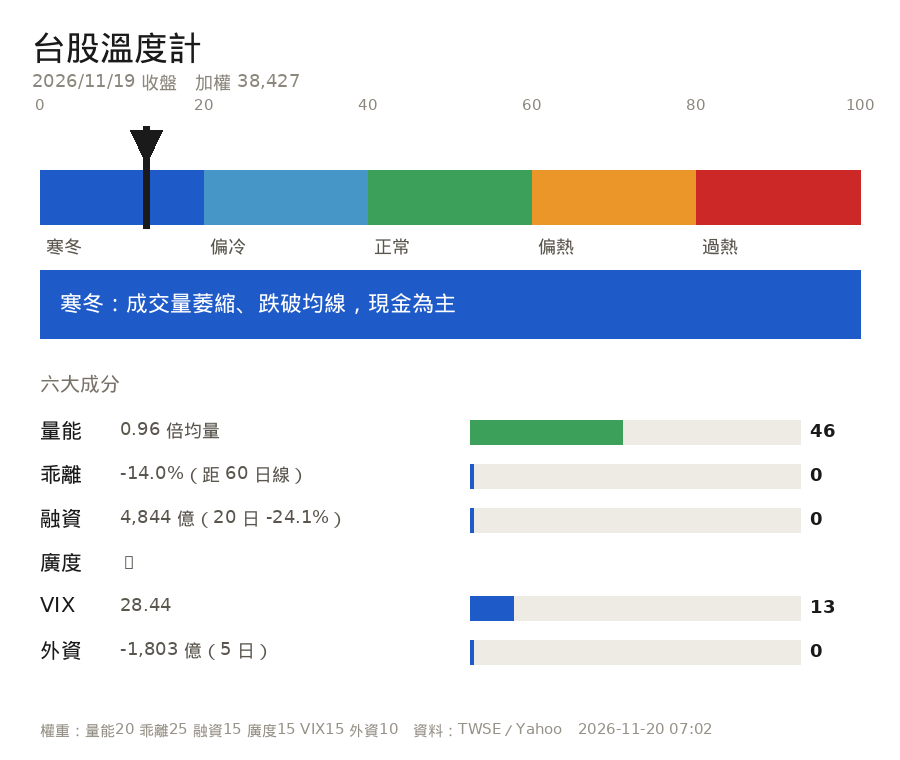
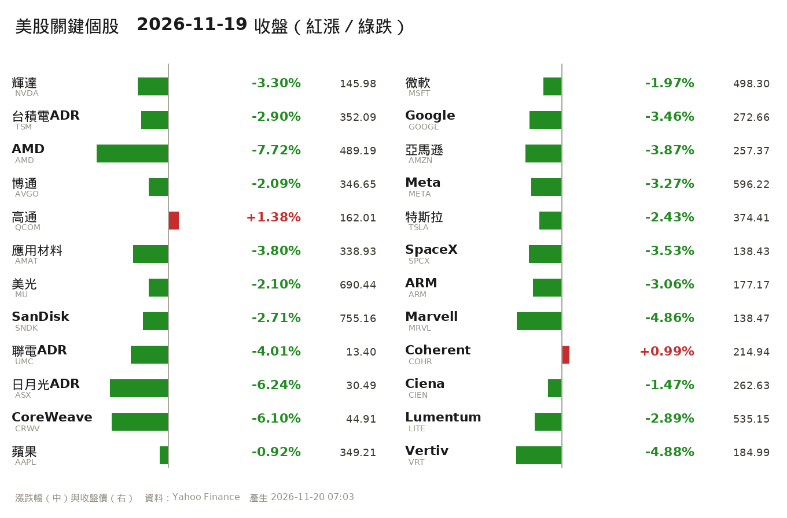
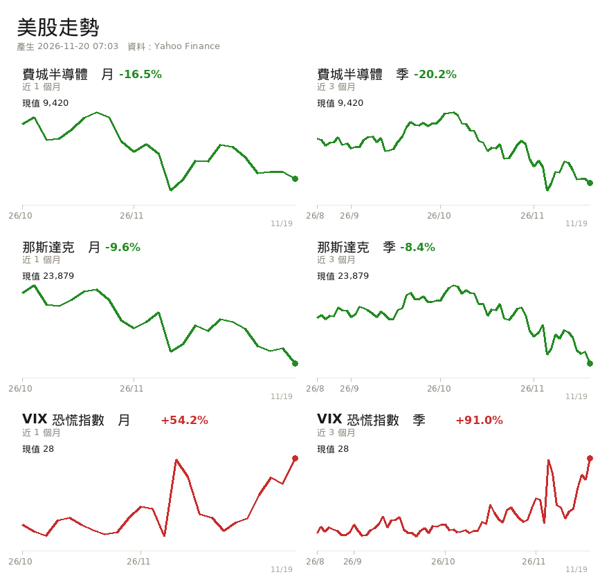
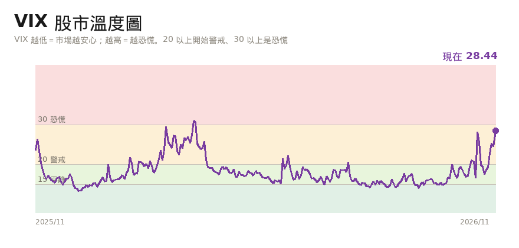
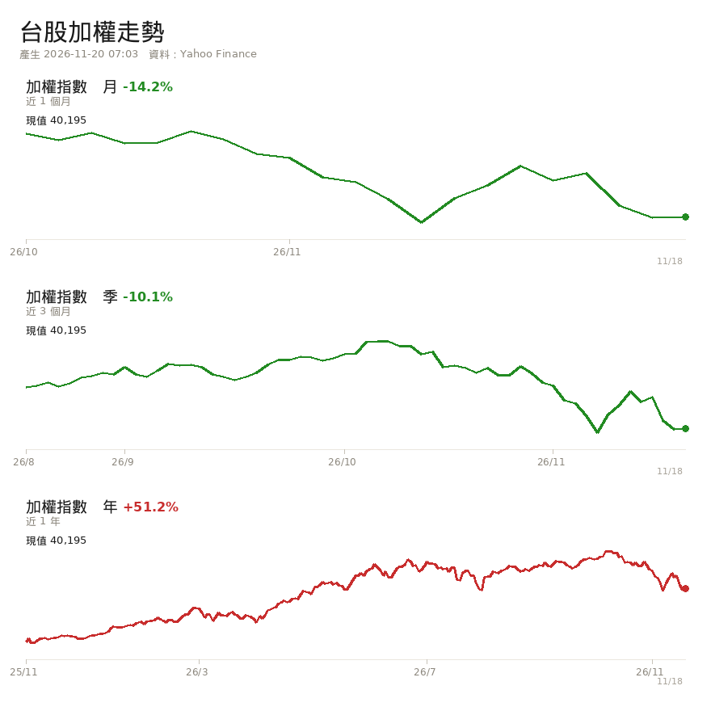

2026-11-20 投資日報2026-11-20 07:06
重點提醒｜Emmy（持續中）
來源：
財經頻道/Emmy追劇時間/Emmy重點提醒追蹤.md。未解除就會每天出現；判定解除當天標「過期」，隔天起不再列出。
- E1 輝達 NVDA／黃仁勳 真正風險不是技術洩密，是「走私晶片＋長期遊說晶片禁令」的國安問題。已持續 8 天。➡️ 未變：今日最新貼文仍是 11/19「董事會不讓黃仁勳復職」那則，內容與昨日相同；國安委員會已成立、正式新任 CEO 仍未定案、黃仁勳 12/1 赴國會說明。股價面續弱：NVDA 11/19 收 145.98（-3.30%）。解除條件：正式（非臨時）新任 CEO 定案並公開承諾對台供應鏈與產品路線不變，且財報與後續國會簡報後無新增出口管制。
- E2 台股／美股大盤 民主黨期中選舉大勝 → AI 資料中心與科技業監管收緊的恐慌，是 11/05-11/06 崩盤主因。已持續 12 天。➡️ 未變：深圳 APEC 三方會談 11/19 已舉行（已發生），但實質議題（核武裁軍、伊朗、俄烏）均無結論，AI 晶片管制沒有新協議；BIS 132 頁新規仍照原樣生效。解除條件：具體監管法案送進國會並過關，或政策明確轉向寬鬆。
- E3 台股／美股大盤 「熊市要來了嗎、該獲利了結嗎」——她事前提示了這一波下殺。已持續 19 天。⬆️ 惡化（破年線）：11/19 加權 -1,768.02 點（-4.40%）收 38,426.89，跌破年線 39,368、史上第 7 大收盤跌點，成交 8,952.81 億；外資 -243.12 億（連 4 賣）、自營避險 -214.40 億、三大法人 -432.25 億、投信 +43.90 億；上市 993 檔下跌／128 檔跌停（上市櫃合計 284 檔跌停）；融資單日 -236 億、餘額仍 5,080 億；櫃買 285.33（-7.22%）；台幣盤中貶破 33。且同日美日韓上漲 → 台股是「獨自崩」。解除條件：指數站回季線且外資轉為連續買超。
- E4 油價／布蘭特原油 中東戰火推升油價 → 通膨壓力 → 股市下跌。已持續 22 天。⬇️ 緩解（貼線，未達解除）：布蘭特 11/19 收 90.05（-2.07%），距解除線 90 只差 0.05；WTI 83.16（-0.12%）。荷姆茲海峽風險仍在，油價只是被需求走弱壓住。解除條件：布蘭特回落至 90 美元以下且中東衝突降溫。
- E5 記憶體族群／8299 群聯 大摩一次降 6 檔記憶體、目標價腰斬，群聯 2,588→1,357 降為「劣於大盤」；理由是 2028 供需恢復平衡＋美國資料中心約兩成產能延後到 2029。已持續 9 天。⬆️ 惡化（逼近外資目標）：群聯 11/19 收 1,455（-4.28%），盤中最低 1,425，距大摩目標 1,357 只剩 7.2% 溢價；櫃買 -7.22% 是重災區。緩解項：高院駁回投保中心解任董事之訴、60 元股利 12/15 除息。解除條件：NAND 現貨報價重新轉強且外資對群聯轉為買超，或大摩回補評等。
- E7 AI 硬體成本／毛利率見頂 輝達 Q4 毛利率指引 71~72%，低於本季 74.8%；採購承諾大幅增加，成本正往上游擠。已持續 2 天。➡️ 未變（口徑待核）：Q4 毛利率指引 71~72%、本季 74.8% 已確認；採購承諾出現兩版本——經濟日報 3,660 億→5,180 億、宏爺與本檔 2,790 億→3,900 億，待 10-Q 原文核對，暫不採用單一數字。解除條件：輝達毛利率回升至 74% 以上且採購承諾增速放緩，或記憶體現貨報價連續 2 個月回落。
⚠️ 警報狀態（今天開盤前最重要的一段）
🚨 連續性下跌，不是單日事件：台股 11/19 跌破年線、美股連 6 黑
- 已發生（11/19 台股）：加權指數 -1,768.02 點（-4.40%）收 38,426.89，跌破 4 萬點與年線 39,368，寫下史上第 7 大收盤跌點。盤中最低 38,259.7（-1,935.21 點），高低差 2,055.83 點，成交 8,952.81 億元。上市 993 檔下跌、128 檔跌停；上市櫃合計 284 檔跌停、僅 120 檔上漲。櫃買指數 285.33（-22.22 點、-7.22%）。
- 已發生（11/19 美股）：S&P 500 -2.02% 收 7,175.83（連 6 個交易日收黑）、那斯達克 -2.25%、道瓊 -2.19%（跌破年線）、費半 -2.41%、VIX 28.44（+15.80%）。10 年期美債殖利率 5.05%。
- 今天的新變數：金管會第二波限空令 11/20 首日上路——個股當日收盤跌幅達 3.5% 以上，次一交易日不得以低於前一日收盤價融券或借券賣出；盤中借券賣出上限由前 30 日均量的 3% 降至 1%（適用 1,028 檔）。
- 我自己盯的三個盤中訊號：①成交量（量縮＝逃命波，不是反轉）②收盤能否站回 40,347（週線收斂三角門檻）③外資期貨空單（近 9.9 萬口，沒回補前反彈都是減碼窗口）。
危機通報排程仍在運作（盤中每 5 分、影片檢查 22:20、盤前預警 06:40，三者 last_status 皆 ok）。你回「已處理」或「不處理」我會記進交易日誌；不回我就繼續提醒。
⓿ 先回答三個問題：消息面 vs 已發生
1. 川普、習近平、普丁「歷史性三方會談」對 AI 晶片是利多嗎？
| 項目 | 狀態 | 說明 |
|---|---|---|
| 三方會談已舉行（深圳 APEC 場邊） | 已發生 | 11/19 舉行，川普 11/18 抵深圳由習近平親自接機 |
| 會談議題是核武、伊朗、俄烏 | 已發生 | 白宮事前公布議程聚焦核武擴散與國際安全 |
| 三個議題「全部談不成」 | 媒體解讀 | 各家報導均指出核武裁軍、伊朗、俄烏無結論；屬轉述，非官方聯合聲明 |
| 「川習私底下會鬆綁 AI 晶片」 | 消息面傳聞 | 沒有任何官方文件支持；BIS 132 頁新規 11/17 已生效，未見暫停 |
| 對台股是利多 | ⏳ 還沒發生 | 需要「具體放寬文件」才算 |
怎麼用：握手不代表政策轉向。要看的是「BIS 有沒有暫停執行」與「台積電、日月光對五國出貨許可有沒有放寬」——這兩件事今天都沒發生，所以不能把會談當買進理由。
2. 台股 -4.4% 是「外資大屠殺」嗎？
| 項目 | 狀態 | 說明 |
|---|---|---|
| 外資賣超 243.12 億、連 4 賣 | 已發生 | 證交所 T86；金額比 11/18 的 765.64 億明顯縮小 |
| 自營商避險賣超 214.40 億 | 已發生 | 這是「權證／期貨避險被迫砍現股」的機械式賣壓 |
| 融資單日大減 236 億 | 已發生 | 斷頭＋自行停損；餘額約 4,850～5,080 億（口徑不同） |
| 上市櫃 284 檔跌停 | 已發生 | 櫃買 -7.22%，是今年最慘 |
| 是外資殺的 | 觀點 | 投顧普遍認為賣壓核心是內資多殺多（斷頭＋自營避險），不是外資；外資只是沒有接手 |
怎麼用：外資沒有大賣，代表「外資還沒回來」，不是「外資原諒你了」。融資餘額一天減 236 億只是開始，還沒洗到安全水位——這是「跌勢變緩」的訊號，不是「底部到了」的訊號。
3. 限空令 11/20 首日會止跌嗎？
| 項目 | 狀態 | 說明 |
|---|---|---|
| 第二波限空令 11/20 生效 | 已發生 | 1,028 檔適用；跌幅逾 3.5% 個股隔日禁平盤下放空 |
| 首日跌停家數會變少 | ⏳ 預估 | 因為不能放空，跌停「看起來」會減少，但那是失真，不是買盤回來 |
| 首日通常不會太好 | 觀點（狄驤） | 不能放空避險的資金會改成賣現股；他同時說「籌碼消化後歷史上漲機率 70% 以上」 |
| 限空令能讓指數止跌 | 觀點（券商） | 統一投顧陳立委：「急跌變緩跌」；限空令是價格管制，對指數沒有直接作用 |
怎麼用：今天不要用「跌停家數」判斷多空，那是被管制的數字。只看兩件事：成交量與收盤位置。
① 一句話結論
台股 11/19 跌破年線、美股連 6 黑，這已經不是單日事件；今天限空令首日，跌停家數會失真，唯一該做的是「不要再加碼、先減最弱的 8299、2330 留核心」，等量能與 40,347 給答案。
🎒 JNA-202 PRO 快取單肩包：目前最低 2,800（BigGo／飛比，全新），目標 1,500，還差 1,300，未達標。
今日要守的紀律（第一行先看市場溫度）
- 市場溫度 13／100（寒冬）——六個成分裡「乖離 -14.0%、融資 20 日 -24.1%、外資 5 日 -1,803 億」三項都是 0 分。寒冬區間對應的紀律是「不要摸底」，不是「要撿便宜」。
- 大盤跌破年線且外資連 4 賣 → 交易紀律第三條的「大盤跌破季線且外資連 3 日大賣 → 總持股降到 3 成以下」已經成立，不是等反彈再說。
- 持股三檔的成本、股數、停損價在
~/vault/持股/*.md仍是空白——今天務必補上，否則 -7% 停損無法執行（這是第三次提醒）。 - 現金水位 20% 以上、不用融資：11/19 的 236 億融資減少就是斷頭賣壓，今天最好的部位是現金。
- 每筆交易寫日誌：今天的判斷與收盤結果，晚上補進
交易日誌/2026-11-20.md。
🌙 盤前跨市場預警（06:41 產出，摘要）
等級 L1，但五條規則同時觸發，實質壓力已接近 L2——S&P -2.02%（門檻 -1.5%）、那指 -2.25%（-1.8%）、道瓊 -2.19%（-1.5%）、費半 -2.42%（-2.0%）、VIX 28.44（門檻 30 或 +15%）全部亮燈。
- ① 美股昨夜：四大指數全黑，S&P 連 6 黑、距 10/6 高點 -8.2%；那指 -13.5%（已進入修正）；道瓊 -9.7% 並跌破年線。
- ② 原因：Fed 10 月會議紀錄轉鷹（市場對 12 月升息定價約 95%、Waller 主張可升 2 碼）＋ 10 年期殖利率站上 5%（評價分母變大）＋ AI 估值疲勞（Anthropic 首日開高 34%、收盤較開盤 -13%）＋ AMD 遭空頭報告重挫 7.72%。沒有單一黑天鵝，是三股力量疊加。
- ③ 影響期間：短期 1–2 週看限空令與外資空單（9.9 萬口）；中期 1–3 個月看 11/25 PCE 與 12 月 FOMC；長期半年以上是 BIS 制度性切割與資金搬家（外資今年已賣超台股約 3.2 兆）。
- ④ AI 建議：不追反彈、不殺低。加權收在 40,347 之上才算轉穩；跌破 38,259.7（11/19 盤中低）且量增，下一道是 37,837。
- ⑤ YouTube 建議：宏爺 11/19 自己 10:30 分批買（他 6 月已清槓桿、有現金）；一綺 11/19 說「接近底部」，但依據只有融資減 236 億一項，且她自己說「反彈是減碼機會」。
- ⑥ 新聞建議：統一投顧陳立委「三原因＋限空令讓急跌變緩跌」；群益「短線偏空、不排除續測年線至前低」；李永年「11/20 週線收在 40,347 之上才是分水嶺」；金管會「基本面穩健（營收 +39.05%、淨利 +86.43%、本益比 24.92）」。
- ⑦ 綜合建議：①先看量與 40,347，不看跌停家數 ②減碼順序 8299 → 2454 → 2330 留核心 ③把條件單寫在紙上：2330 2,085／2454 3,660／8299 1,425，跌破就執行。
② 國際與美股
四大指數（11/19 收盤，已發生）
| 指數 | 收盤 | 漲跌點 | 漲跌% |
|---|---|---|---|
| S&P 500 | 7,175.83 | -147.80 | -2.02% |
| 那斯達克 | 23,879.20 | -550.68 | -2.25% |
| 道瓊工業 | 49,097.06 | -1,101.11 | -2.19% |
| 費城半導體 | 9,419.72 | -233.08 | -2.41% |
| VIX 恐慌指數 | 28.44 | +3.88 | +15.80% |

關鍵個股（24 檔，Yahoo Finance 11/19 收盤）
| 代碼 | 名稱 | 收盤 | 漲跌% | 一句判讀 |
|---|---|---|---|---|
| NVDA | 輝達 | 145.98 | -3.30% | 財報超預期仍跌，治理折價壓過基本面 |
| TSM | 台積電 ADR | 352.09 | -2.90% | 折台股約 2,320 元，仍較台北現股溢價 10.5% |
| AMD | 超微 | 489.19 | -7.72% | 空頭報告點名與中國黑名單廠關連，跌最重 |
| AVGO | 博通 | 346.65 | -2.09% | ASIC 線相對抗跌，但沒能逆勢 |
| QCOM | 高通 | 162.01 | +1.38% | 全場極少數上漲，成熟製程／非 AI 伺服器比重高 |
| AMAT | 應用材料 | 338.93 | -3.80% | 設備股跟著資本支出疑慮走 |
| MU | 美光 | 690.44 | -2.10% | NAND／DRAM 報價修正壓力未解 |
| SNDK | SanDisk | 755.16 | -2.71% | 記憶體二線同步走弱 |
| UMC | 聯電 ADR | 13.40 | -4.01% | 成熟製程被中國買盤消失打到 |
| ASX | 日月光 ADR | 30.49 | -6.24% | BIS 要求封裝廠出貨許可，最直接受害 |
| CRWV | CoreWeave | 44.91 | -6.10% | AI 機房財務疑慮的代表，跌幅比輝達大 |
| AAPL | 蘋果 | 349.21 | -0.92% | 巨頭裡最抗跌，防禦性資金去處 |
| MSFT | 微軟 | 498.30 | -1.97% | 雲端資本支出仍被追問回收期 |
| GOOGL | 272.66 | -3.46% | TPU 題材救不了評價修正 | |
| AMZN | 亞馬遜 | 257.37 | -3.87% | AWS 成長被利率折現吃掉 |
| META | Meta | 596.22 | -3.27% | 算力支出最大、現金流最受質疑 |
| TSLA | 特斯拉 | 374.41 | -2.43% | 跟大盤同步，無個別事件 |
| SPCX | SpaceX | 138.43 | -3.53% | 新股波動大，跌破 140 心理關卡 |
| ARM | 安謀 | 177.17 | -3.06% | 與 NVDA 同步，資金沒有從 GPU 移到 ASIC |
| MRVL | Marvell | 138.47 | -4.86% | ASIC 線跌幅大於 GPU，資金是「一起走」不是「換手」 |
| COHR | Coherent | 214.94 | +0.99% | 光通訊逆勢收紅，資料中心內部連線需求仍在 |
| CIEN | Ciena | 262.63 | -1.47% | 光通訊相對抗跌 |
| LITE | Lumentum | 535.15 | -2.89% | 光通訊三檔中跌最多 |
| VRT | Vertiv | 184.99 | -4.88% | 散熱電源跌幅偏重，市場在質疑 AI 機房還蓋不蓋 |
上漲的部分（別只看跌）
- 高通 QCOM +1.38%：全場 24 檔裡漲最多，資金往「AI 比重較低、評價較低」的通訊晶片躲。
- Coherent COHR +0.99%：光通訊唯一收紅，資料中心內部 800G／1.6T 連線需求沒有因為股災消失。
- 相對抗跌（跌幅小於 1%）：蘋果 -0.92%、Ciena -1.47%。這代表賣壓集中在「純 AI 硬體」，不是在砍整體股市。
- 台股同日只有 120 檔上漲（上市櫃合計），不是全面崩盤但也接近了——這種寬度通常對應「反彈有、趨勢沒有」。
- 反向證據：AMD -7.72%、日月光 ADR -6.24%、CoreWeave -6.10%，AI 硬體鏈的傷害是集中的、不是隨機的。
跨市場
| 項目 | 數值 | 漲跌 | 說明 |
|---|---|---|---|
| 美 10 年期殖利率 | 5.05% | -0.28% | 仍在 5% 之上，評價分母沒鬆 |
| 美 5 年期殖利率 | 4.87% | -0.37% | 短端沒降，12 月升息定價約 95% |
| 美元指數 | 103.93 | +0.07% | 創 2025 年 4 月以來新高 |
| 布蘭特原油 | 90.05 | -2.07% | 貼近解除線 90，但未破 |
| WTI 原油 | 83.16 | -0.12% | 需求走弱壓住供給風險 |
| 黃金 | 3,627.90 | -3.05% | 實質利率上升，避險資金也撤 |
| 美元／台幣 | 32.94 | +0.10% | 11/19 盤中曾貶破 33，今晨約 32.99 |
| VIX | 28.44 | +15.80% | 恐慌升溫，但未破 30 |
③ 台股覆盤（11/19 週四，已發生）

盤勢節奏
| 日期 | 收盤 | 漲跌點 | 漲跌% | 備註 |
|---|---|---|---|---|
| 11/13（四） | 43,675.12 | +583.25 | +1.35% | 週線 +10.01%，反彈高點 |
| 11/16（一） | 41,040.08 | -2,635.04 | -6.03% | 史上第 2 大跌點 |
| 11/17（二） | 40,092.11 | -947.97 | -2.31% | 連 2 黑 |
| 11/18（三） | 40,194.91 | +102.80 | +0.26% | 台指期結算，盤中高低差 1,677 點 |
| 11/19（四） | 38,426.89 | -1,768.02 | -4.40% | 破 4 萬點與年線 39,368，史上第 7 大 |
- 本週至今（11/14–11/20 開盤前）：-5,248.23 點、-12.02%；本月截至 11/19 約 -15%（Bloomberg 稱 2008 年以來最大月跌幅）。
- 成交金額 8,952.81 億（證交所日報口徑含零股／盤後／鉅額為 9,429.89 億）——量沒有爆，但跌點極大，代表「接的人少、賣的人急」。
- 三大法人合計 -432.25 億：外資及陸資 -243.12 億（連 4 賣）、投信 +43.90 億（唯一買方）、自營商 -233.03 億（避險 -214.40、自行 -18.63）。
- 融資單日 -236 億，餘額約 4,850～5,080 億（各口徑不同）；這是 11/19 唯一的「好消息」。
- 寬度：上市 993 檔下跌、128 檔跌停；上市櫃合計 284 檔跌停、僅 120 檔上漲；櫃買 285.33（-7.22%），今年最慘。
- 匯率：台幣 11/19 收 32.94，盤中一度貶破 33.02。股匯雙殺是外資提款的證據。
④ 頻道影片重點（影片觀點，不是事實）
宏爺講股 11/19「股市崩盤？宏爺買股；台股遭鎖定狙擊？外資狂倒 3.17 兆」（錄於 11/19 盤中）
🔴 加碼／看多
- 他本人 10:30「按原定資金計劃分批買入、增加持倉」，主張「別人恐懼時買進」⏱[5:52]、[6:15]
- 櫃買兩個月從 435 跌到 285，他認為是貪婪與恐懼、不是基本面惡化 ⏱[4:43]
- 輝達本益比 16.21（歷史多在 50 倍以上）⏱[14:40]；美光本益比 9.49、盤整半年 ⏱[14:15]
- 外資選擇權由 2.3 億美元空單翻成 4.8 億美元多單 ⏱[12:32]
- 台積電南科 3nm 明年上半年量產、新竹高雄 2nm 擴產 ⏱[18:09]
🟢 危機／減碼
- 道瓊連五黑並跌破年線（200 日均線），有死亡交叉風險 ⏱[2:17]
- SOX 跌破所有均線、月線與年線死亡交叉 ⏱[3:20]；那指率先跌破所有均線 ⏱[2:37]
- 台股長黑 K 摜破年線，他自己也說「若收實體長黑，仍要非常謹慎」⏱[3:58]
- 外資期貨空單近 9.9 萬口、今年淨賣超 3.17 兆 ⏱[11:21]、[12:09]
- 11/18 融資「甚至沒減少 7 億」＝籌碼沒洗乾淨 ⏱[11:38]
- 紐約 Fed 威廉斯「現在降息太早」⏱[8:13]；台積電 ADR 跌破 7/29 低點、20 週線失守 ⏱[13:15]
⚠️ 他 6 月已清槓桿、手上有現金；這是他自己的資金計畫，不是給觀眾的買點（他節目中有免責聲明）。
一綺聊股 11/19「超過 200 檔股票殺跌停！金管會緊急祭出禁空令有救嗎？」（1:23:13）
🔴 加碼／看多
- 融資單日大減 236 億、餘額剩 4,800 多億，「這是今天唯一的好消息」⏱[21:04]
- 流動性危機後「隔天或再下一個交易日有技術性反彈」⏱[4:37]、[18:28]
- 2330 回到 2,100「沒什麼好殺」、2330／2454 沒什麼太大疑慮 ⏱[35:26]、[37:02]
- 台積電以 5 億美元入股 Anthropic（0.03%）⏱[32:25]
- 操作心法：今天不要掛跌停賣，「反正也賣不掉」⏱[6:33] 段
🟢 危機／減碼
- 櫃買 -7.22%、今年最慘，回到今年 3、4 月位置 ⏱[7:35]
- 260 家以上跌停的多殺多，成長性好的股票照樣跌停 ⏱[8:50]
- Fed 12 月升息機率逾 9 成 ⏱[26:30]
- 新台幣貶破 33 元是根本問題，「匯率守不住，股市怎麼好」⏱[20:31]
- 禁空令不是萬靈丹，量會更縮 ⏱[6:33]
⚠️ 她說「接近底部」的全部依據只有「融資減 236 億」一項；她自己也明說「反彈是減碼機會，不是加碼機會」。
📊 情緒溫度計（逐字稿實算）
| 集數 | 危機詞 | 看多詞 | 判讀 |
|---|---|---|---|
| 一綺聊股 11/19 | 25（跌停×13、斷頭×4、危機×4、恐慌×3） | 18（反彈×6、樂觀×5） | 危機詞暴增 5 倍，但她同時講「接近底部」→ 恐慌中的期待 |
| 宏爺講股 11/19 | 9（恐慌×4、崩盤×2、暴跌×2） | 36（成長×15、上漲×8、反彈×6） | 用詞偏多，因為他在買；但危機段他自己也講「收實體長黑要謹慎」 |
| 一綺聊股 11/18 | 5 | 5 | 對照組：昨天還沒這麼恐慌 |
語氣判讀：一綺的危機詞一天內從 5 跳到 25，是這波最劇烈的語氣惡化；宏爺的看多詞最多，但那是在為自己的加碼行為找理由。兩人共同點：都不認為現在是「安全」的位置——一個說「接近底部但反彈是減碼機會」，一個說「跌破年線要非常謹慎」。這種組合通常對應「急跌後有技術反彈、但趨勢還沒轉」。
🔵 中長期展望（產業趨勢）
- AI 硬體的成本正在往上游擠：輝達 Q4 毛利率指引 71~72%（本季 74.8%），採購承諾大幅拉高去鎖記憶體料源。營收成長、毛利率下滑是「量增價減」，對代工（2330）是量能沒問題、價格壓力上升。
- BIS 新規把「第三地與遠端算力」一起堵：五國納管＋1,200 萬 TPP 門檻＋晶圓製造與封裝廠對五國 IC 設計公司出貨要許可。這不是一次性的新聞，是制度層級的切割，時間尺度以年計。
- 中國海外資料中心是下一輪管制目標（游庭皓粉專引 Institute for Progress）：2026 年中國海外 AI 算力有 75% 集中在東南亞；若美方把遠端算力也納管，馬泰機房的設備訂單會延後，台灣設備商是先感受到的一群。
- ASIC 與 GPU 的資金是「一起走」不是「換手」：11/19 ARM -3.06%、MRVL -4.86%、NVDA -3.30%，三條線同步下跌，代表現在是「整體 AI 評價修正」，還沒進入「錢從 GPU 搬到 ASIC」的階段。
- AI 循環融資是這輪最大的結構風險：Anthropic 以 83 美元定價、掛牌估值約 2 兆美元，十年算力合約近 9,000 億。它在 5% 利率環境能不能持續借到錢，決定 AI 資本支出能不能延續。
- 政策護盤會讓「跌勢變長不變短」：限空令是價格管制，會讓跌停家數失真、量能萎縮；歷史上政策護盤後真正的底部，通常出現在「融資洗完＋外資轉買」之後，而不是護盤當天。
📰 Emmy 貼文（貼文，不是影片）
已發生
- 董事會透過代理執行長 Kress 的電視專訪表明：不會讓黃仁勳復職；公司內部已成立「國家安全委員會」（貼文 11/19）。
- BIS 132 頁新規 11/17 生效：五國納管、1,200 萬 TPP 算力輸出須許可、晶圓製造與封裝廠對五國 IC 設計公司出貨須申請許可（貼文 11/18，直接點到台積電、日月光）。
她的觀點（不是事實）
- 董事會現在只能這樣說，因為輝達正遭「鋪天蓋地的國安調查」，不可能在此時展現對抗氣勢；黃仁勳該做的是配合調查、釐清內部流程。
- 美國國安單位「已經非常客氣」；抵抗或蔑視只是在拖延自己回去的時間。
📌 三句話摘要：① 董事會把話說死，改由「國安委員會」對接監管；② 真正壓力是 BIS 把第三地與遠端算力一起堵掉，台積電、日月光出貨要許可；③ 治理折價會延續，不是一週能解決的事。
今日 20 則留言全為粉絲互動，沒有產業資訊可引用（原始檔記錄：取 0 則）。
📺 一綺聊股最近一期投資標的
2026年11月19日 一綺聊股｜2026-11-19 超過200檔股票殺跌停！台股又崩千點！金管會緊急祭出「禁空令」有救嗎？
🟢 可以留意／建倉的標的
- 大盤 「出現流動性危機，基本上可以稍微樂觀看成快要來到底部反彈」——她的歷史經驗是：一片跌停後，隔天或再下一個交易日有機會技術性反彈
- 融資 今天大減 236 億元、餘額剩 4,800 多億，她說「這是今天唯一的好消息」
- 2330 台積電 回到 2,100 元，她說「如果 2330、2454 都不能投，那我也真不知道該說什麼」；GPU 訂單若放慢，Google TPU／ASIC 可以支撐
- 台積電 公告以每股 83 美元、約 5 億美元入股 Anthropic（0.03%），她自己也用複委託參與 IPO
- 操作心法 今天不要去掛跌停賣，「反正也賣不掉，等輪到你的時候打開，你會砍在最低點」
- 國際 夜盤反彈 800 多點，她認為不用再那麼恐慌
🔵 中長期展望（產業趨勢）
- 短（1–2 週）：禁空令讓跌停家數收斂，但量能會先縮；她的「隔日或後一日技術反彈」若出現，是減碼機會不是加碼機會。
- 中（1–3 個月）：關鍵是匯率與外資。新台幣若貶破 33.5，外資提款會更兇；12 月央行與 Fed 同步緊縮的話，櫃買（8299 所在）壓力最大。
- 長（半年以上）：AI 需求沒消失（輝達 Q4 指引 1,300 億、Anthropic IPO 超額認購），但「高毛利＋高槓桿」的商業模式正在被重新估價；台積電仍是相對安全的一環。
🔴 危機／要避開
- 櫃買（中小型股） 今天殺超過 7.1%，「已經回到今年 3、4 月的位置」，這是全場最痛的一塊
- 多殺多 融資維持率到危險水位的個股出現斷頭賣壓，PCB 重倉股觸及風控紀律時「不計代價砍」
- 跌停家數 今天 260 家以上跌停（她口述），成長性強、EPS 展望好的股票照樣跌停 → 她認為「已經超跌」
- 融資維持率 她說目前 147%（金管會 11/18 公布整戶擔保維持率是 163.16%，兩者口徑不同）
- 外資 今天賣超 200 多億、連 4 賣；她說「力道有減緩」，但仍是賣方
- 匯率 新台幣貶破 33 元，她認為「匯率守不住，股市怎麼會好」，這是資金外流的根
📌 本集結論
- 今天是內部籌碼崩（斷頭＋停損＋跌停排隊），不是外資大屠殺：外資只賣 243 億。
- 唯一轉好的訊號是融資單日 -236 億，這是她敢說「接近底部」的全部依據。
- 禁空令明天上路，短線會讓跌停家數變少，但量會更縮——量縮不代表轉多，只代表沒人敢接。
⑤ 我的持股動態
2330 台積電（11/19 收 2,100 元，-75 元、-3.45%）
- 籌碼：外資賣超 8,635 張（連 6 賣，近 5 日 -49,778 張、近 10 日 -87,481 張）；成交量 48,027 張。今天不在限空名單（跌幅 3.45% 未達 3.5%）。
- 評價：ADR 11/19 收 352.09（-2.90%），折台股約 2,320 元、較台北現股溢價 10.5%——外資對基本面的評價仍高於台北。
- 基本面（已發生）：南科 3nm 明年上半年量產、新竹與高雄 2nm 持續擴產（宏爺 11/19）；以每股 83 美元、約 5 億美元入股 Anthropic 0.03%（公司公告）。
- 來源分歧：一綺說「2,100 沒什麼好殺」；宏爺只談 ADR 跌破 7/29 低點與 20 週線失守，結論是「用時間換空間」。兩人都沒叫你砍，但也都沒叫你加。
- 處置：續抱、不加碼。跌破 2,085（11/19 盤中低）且量增 → 先減 1/3；跌破 1,953（收盤 -7%）→ 依紀律無條件減。反彈站回 2,250 且量 > 5 日均量，才算溢價收斂成功。
2454 聯發科（11/19 收 3,720 元，-220 元、-5.58%）
- 籌碼：外資賣超 2,592 張（連 4 賣，近 5 日 -4,488 張、近 10 日 -12,334 張）；成交量 17,920 張。今天受限空令限制（跌幅逾 3.5%，不得低於 3,720 放空）。
- 題材（消息面）：郭明錤估 Google TPU 訂單看到 2029 年（非凡新聞標題）；一綺說「2454 跟 2330 一樣沒什麼太大疑慮」。
- 風險：它是三檔裡跌幅最重的權值股（-5.58%），且 AI PC／ASIC 題材在殺盤時沒有保護作用——11/19 世芯 -8.86%、創意 -9.98%，ASIC 族群是重災區。
- 處置：續抱、優先減這一檔。跌破 3,660（11/19 觀察低）→ 減 1/3；跌破 3,460（-7%）→ 減半。若今日反彈站不回 3,800 且外資續賣，先減它而不是 2330。
8299 群聯（11/19 收 1,455 元，-65 元、-4.28%）
- 籌碼：成交量 6,391 張；櫃買 -7.22% 是重災區。11/18 外資已轉賣 596 張、中斷連 5 買。
- 評價壓力：大摩目標價 1,357（「劣於大盤」），現價只高出 7.2%；美銀示警 NAND 現貨自 10 月中下旬修正約 20%、IT 用 NAND 明年 Q1 合約再跌 5~10%。
- 緩解項：高院駁回投保中心解任董事之訴（治理釐清）；60 元股利 12/15 除息。
- 處置：三檔中最該減，反彈分批減碼。反彈到 1,500 以上分批減（一次不超過部位 1/3）；跌破 1,425（11/19 盤中低）→ 減到只剩底倉；1,353（-7%）為最後防線。
三檔的成本、股數、停損價在
~/vault/持股/*.md仍是空白——今天務必補上。沒有成本，「跌破 -7% 無條件賣出」這條紀律根本無法執行。
🎒 比價追蹤：JNA 包款（目標 1,500）
更新 11-20 07:02｜資料 BigGo／飛比。JNA-202 PRO 官方是「單肩包」。
| 品項 | 全新最低 | 福利品 | 二手 | 距目標 |
|---|---|---|---|---|
| JNA-202 PRO 快取單肩包 | 2,800 | 2,940 | — | 還差 1,300 |
未達標：目前最低仍高於 1,500 元，繼續追。
⑥ 觀察清單與法人動向
台股觀察清單（13 檔）
| 代碼 | 名稱 | 現價 | 漲跌 | 成交量 |
|---|---|---|---|---|
| 2330 | 台積電 | 2,100.0 | -3.45% | 48,027 張 |
| 2308 | 台達電 | 1,000.0 | -5.66% | 27,903 張 |
| 2454 | 聯發科 | 3,720.0 | -5.58% | 17,920 張 |
| 3443 | 創意 | 6,000.0 | -9.98% | 1,117 張 |
| 2383 | 台光電 | 3,120.0 | -9.96% | 3,153 張 |
| 2408 | 南亞科 | 293.5 | -9.69% | 61,275 張 |
| 3037 | 欣興 | 596.0 | -9.97% | 18,396 張 |
| 1802 | 台玻 | 58.7 | -9.97% | 120,171 張 |
| 1303 | 南亞 | 228.5 | -9.86% | 56,938 張 |
| 2327 | 國巨* | 322.5 | -8.38% | 59,992 張 |
| 2368 | 金像電 | 790.0 | -9.92% | 7,257 張 |
| 2344 | 華邦電 | 98.0 | -9.26% | 75,510 張 |
| 3661 | 世芯-KY | 3,600.0 | -8.86% | 5,713 張 |
判讀：13 檔裡有 7 檔跌 9% 以上（創意、台光電、南亞科、欣興、台玻、金像電、南亞），跌停邊緣的有 6 檔。這是「全面性殺盤」而不是「權值股拖累」——中小型股與 AI 供應鏈（PCB、載板、記憶體、ASIC）是重災區。台積電 -3.45% 反而是全清單最抗跌，這說明賣壓不是針對基本面。
外資動向（買賣超，單位：張）
| 代碼 | 名稱 | 今日 | 連續 | 近 5 日累計 | 近 10 日累計 |
|---|---|---|---|---|---|
| 2344 | 華邦電 | +9,515 | 買超 1 天 | +9,632 | -15 |
| 2327 | 國巨* | +5,262 | 買超 1 天 | +5,927 | +7,904 |
| 2408 | 南亞科 | +6,953 | 買超 1 天 | +3,808 | +23,629 |
| 2383 | 台光電 | +235 | 買超 1 天 | +1,047 | -2,258 |
| 3661 | 世芯-KY | +155 | 買超 1 天 | +479 | +2,028 |
| 3443 | 創意 | +270 | 買超 1 天 | +161 | -834 |
| 1802 | 台玻 | -38,013 | 賣超 5 天 | -103,558 | +161,239 |
| 1303 | 南亞 | -6,893 | 賣超 7 天 | -54,946 | -71,675 |
| 2330 | 台積電 | -8,635 | 賣超 6 天 | -49,778 | -87,481 |
| 2308 | 台達電 | -2,183 | 賣超 2 天 | -9,156 | -19,984 |
| 3037 | 欣興 | -1,695 | 賣超 2 天 | -6,748 | -24,663 |
| 2454 | 聯發科 | -2,592 | 賣超 4 天 | -4,488 | -12,334 |
| 2368 | 金像電 | -892 | 賣超 2 天 | -382 | -4,127 |
法人資料截止：2026-11-19（TWSE T86）｜報價時間 13:30:00
判讀：外資在記憶體（華邦電、南亞科）與被動元件（國巨）逢低買，但台積電連 6 賣是最該注意的一條——它是外資對台股整體的態度指標，不是對台積電的評價。台玻賣超 5 天累計 10 萬張，是這波最被拋棄的一檔。
🧮 ETF 共識持股（跨發行商）
追蹤 5 檔 AI／半導體 ETF（5 家不同發行商）的前 25 大持股；≥4 檔同時持有才列入。 ETF：SMH、SOXX、XLK、QQQ、VGT ｜ 查詢：2026-11-20 07:02
| 股票 | 名稱 | 持有 ETF 檔數 | 哪幾檔 | 合計權重 |
|---|---|---|---|---|
| NVDA | NVIDIA Corporation | 5 | QQQ、SMH、SOXX、VGT、XLK | 59.2% |
| AMD | Advanced Micro Devices | 5 | QQQ、SMH、SOXX、VGT、XLK | 29.3% |
| AVGO | Broadcom Inc. | 5 | QQQ、SMH、SOXX、VGT、XLK | 28.2% |
| MU | Micron Technology | 5 | QQQ、SMH、SOXX、VGT、XLK | 22.6% |
| TXN | Texas Instruments | 5 | QQQ、SMH、SOXX、VGT、XLK | 15.8% |
| INTC | Intel Corporation | 5 | QQQ、SMH、SOXX、VGT、XLK | 13.1% |
| AMAT | Applied Materials | 5 | QQQ、SMH、SOXX、VGT、XLK | 12.3% |
| LRCX | Lam Research | 5 | QQQ、SMH、SOXX、VGT、XLK | 11.3% |
| ADI | Analog Devices | 4 | SMH、SOXX、VGT、XLK | 12.3% |
| QCOM | QUALCOMM | 4 | SMH、SOXX、VGT、XLK | 10.8% |
| KLAC | KLA Corporation | 4 | SMH、SOXX、VGT、XLK | 10.5% |
| MRVL | Marvell Technology | 4 | SMH、SOXX、VGT、XLK | 8.1% |
本期換股：XLK 新增 STX、刪除 SNDK。
⚠️ 這是「被動資金需求」的參考，不是買進建議。ETF 納入常發生在股價已漲之後，刪除則常在跌完之後。台股 ETF 目前尚未接入（發行商持股為 JS 載入）。
⑦ SWOT
| 面向 | 內容 |
|---|---|
| S 優勢（現在還站得住的） | 台積電 ADR 相對台北現股仍溢價 10.5%，外資評價沒崩；上市櫃前三季稅前淨利 6.61 兆、年增 86.43%（金管會）；融資單日已減 236 億，籌碼開始洗；2330 是 13 檔觀察清單裡最抗跌的一檔 |
| W 劣勢（自身的問題） | 三檔持股成本與股數仍空白，-7% 停損無法執行；三檔全在 AI 硬體鏈，沒有分散；8299 同時承受「櫃買流動性＋記憶體中國買盤消失＋外資目標價低於市價」三重弱勢 |
| O 機會（可能轉好的來源） | 限空令讓急跌變緩跌、政策護盤有國安基金在場；歷史統計流動性危機後隔日或隔兩日有技術反彈（狄驤：70% 以上）；布蘭特 90.05 貼近解除線，油價若回落可部分解除 E4；跌停打開那天通常是短線解套點 |
| T 威脅（最該防的） | 外資期貨空單近 9.9 萬口未回補，反彈都是逃命波；12 月升息定價約 95%，10 年期殖利率 5.05%；BIS 新規要求封裝與晶圓廠出貨許可，日月光 ADR -6.24% 已先反映；11/25 PCE 與 12/10 CPI 是下一個定價點 |
⑧ 財經行事曆
| 日期 | 市場 | 事件 | 為什麼要盯 |
|---|---|---|---|
| 11/20（五）今天 | TW | 限空令第二波首日（1,028 檔） | 跌停家數會失真；只看量與收盤位置（40,347） |
| 11/20（五）盤後 | TW | 週線收盤 | 李永年：週線收在 40,347 之上才算情勢轉穩 |
| 11/24（一）起 | TW | MSCI 11 月調整生效前一週 | 外資提前換股，權值股尾盤容易異常大量 |
| 11/25（三） | US | Q3 GDP 二次估值、PCE 通膨、個人所得支出 | 12 月升息幅度的最後一塊拼圖 |
| 11/26（四） | US | 感恩節休市 | 台股照常交易，但外資放假、量能通常更縮 |
| 11/27（五） | US | 黑色星期五半日交易 | 流動性差，不要在這天做重大決定 |
| 11/27（五）前 | TW | 外資期貨空單是否從 9.9 萬口下降 | 沒降＝反彈都是逃命波 |
| 11/30（一） | TW／US | MSCI 調整收盤後生效 | 台股尾盤（13:00-13:30）會出現大量換股單 |
| 12/10（四） | US | 美國 11 月 CPI | Fed 12 月會議前關鍵數據 |
| 12/15（一） | TW | 群聯除息 60 元 | 8299 的實際到手股利與填息觀察 |
⑨ 紀律提醒（讀 ~/vault/交易紀律.md，指出與昨晚紅綠清單衝突之處）
| 紀律條文 | 現況（11/19 收盤） | 該做什麼 |
|---|---|---|
| 大盤跌破季線且外資連 3 日大賣 → 總持股降到 3 成以下 | 加權 38,426.89，跌破年線 39,368、亦在季線之下；外資連 4 賣（-243.12 億） | 🟢 紀律已要求降部位，不是等反彈 |
| 跌破進場價 -7% 無條件賣出 | 三檔成本仍空白（持股/*.md 未填） |
今天補上成本、股數、停損價 |
| 不攤平虧損、不追漲停 | 今天 1,028 檔禁平盤下放空，跌停家數失真 | 跌停打開是解套點，不是買點 |
| 現金水位 20% 以上、不用融資 | 11/19 的 236 億融資減少就是斷頭賣壓 | 現金就是今天最好的部位 |
| 市場溫度 13／100（寒冬） | 乖離 -14.0%、融資 20 日 -24.1%、外資 5 日 -1,803 億 | 寒冬 → 不要摸底（本條依今日溫度新增） |
| 每筆交易寫日誌 | 本檔即為盤前判斷 | 收盤後補「判斷 vs 實際」 |
⚠️ 與昨晚紅綠清單的三個衝突，直接寫出來
- 衝突 1｜宏爺「10:30 分批買」vs 紀律「破年線＋外資連 4 賣 → 降到 3 成」：他 6 月已清槓桿、手上有現金；你手上若是虧損部位再加碼，就是紀律第 2 條禁止的「攤平」。→ 不跟。
- 衝突 2｜狄驤「歷史 70% 上漲率」vs 李永年「不急著抄底」：統計講的是「一籃子相似情境的機率」，籌碼講的是「這一次外資還沒回來」。→ 機率不能當下單理由，條件成立才做。
- 衝突 3｜金管會「基本面穩健（營收 +39%、淨利 +86%）」vs 外資今年賣超 3.2 兆：基本面是「已發生」，資金面是「現在進行式」；短期價格由資金決定，長期才輪到基本面說話。決定你這週要不要減碼的是資金面。
⑩ 資料來源與限制
- 台股：證交所 11/19 收盤統計與三大法人買賣金額統計表（
n.yam.com、pinnews.com.tw轉載證交所原始表）、櫃買中心、新頭殼／經濟日報／中央社／非凡新聞（11/19）、~/.hermes/scripts/tw_watchlist.py（TWSE 即時報價＋T86，資料截止 2026-11-19）。 - 美股：Yahoo Finance chart API（11/19 日 K 收盤，
~/.hermes/cache/scratch/fetch_us_quotes.py實抓）、preopen_us.py06:41 快照、The Company Chronicle、Stock Market Watch（11/19 收盤整理）。 - 頻道：
財經頻道/宏爺講股/2026-11-19_股市崩盤宏爺買股/筆記.md、財經頻道/一綺聊股/2026-11-19_超過200檔股票殺跌停/筆記.md、Emmy追劇貼文2026-11-20_原始.md與整理版、Emmy重點提醒追蹤.md。 - 消息面：
財經頻道/消息面/fb_2026-11-20.json（06:22 抓取，未登入 FB 只取各粉專最新一則）。 - 知識庫：
~/vault/交易紀律.md、持股/2330_台積電.md、持股/2454_聯發科.md、持股/8299_群聯.md、日報/素材/2026-11-20_盤前預警.md。 - 限制：①持股成本與股數仍空白，所有「-7%」價位是用現價推算，不是你的實際成本，等補上後要重算。②一綺 11/19 這集是 Whisper 聽打、無中文字幕，詞頻會系統性低估。③限空令首日跌停家數不具參考性。④所有「預估」與「觀點」均已標示，未經證實的傳聞一律寫「消息面」。
- 不編造原則：本文所有數字均來自上列來源；查不到的（例如輝達採購承諾的精確金額）寧可寫「口徑待核」也不採用單一數字。
產生時間：2026-11-20 07:00（台北）
紀律
- 市場溫度 13／100（寒冬） → 寒冬區間的紀律是「不要摸底」，不是「撿便宜」。
- 台股跌破年線 39,368、外資連 4 賣 → 交易紀律「總持股降到 3 成以下」已成立，不是等反彈。
- 減碼順序：8299 → 2454 → 2330 留核心（8299 距外資目標只剩 7.2% 溢價）。
- 條件單先寫在紙上：2330 2,085／2454 3,660／8299 1,425，跌破就執行，不臨場決定。
- 今天不要用跌停家數判斷多空（限空令首日會失真），只看成交量與收盤位置 40,347。
走勢
市場溫度（警示燈）

台股加權近 5 個交易日
12 檔觀察清單（11/19 收盤）
| 代碼 | 名稱 | 收盤 | 漲跌% |
|---|---|---|---|
| 2330 | 台積電 | 2,100.0 | -3.45% |
| 2308 | 台達電 | 1,000.0 | -5.66% |
| 2454 | 聯發科 | 3,720.0 | -5.58% |
| 3443 | 創意 | 6,000.0 | -9.98% |
| 2383 | 台光電 | 3,120.0 | -9.96% |
| 2408 | 南亞科 | 293.5 | -9.69% |
| 3037 | 欣興 | 596.0 | -9.97% |
| 1802 | 台玻 | 58.7 | -9.97% |
| 1303 | 南亞 | 228.5 | -9.86% |
| 2327 | 國巨* | 322.5 | -8.38% |
| 2368 | 金像電 | 790.0 | -9.92% |
| 2344 | 華邦電 | 98.0 | -9.26% |
| 3661 | 世芯-KY | 3,600.0 | -8.86% |
漲跌停：上市跌停 128 檔、上櫃合計 284 檔跌停；僅 120 檔上漲。
重點
美股
- 四大指數全黑：S&P -2.02%（連 6 黑）、那指 -2.25%、道瓊 -2.19%、費半 -2.41%。
- VIX 28.44（+15.80%）；10 年期殖利率 5.05%，12 月升息定價約 95%。
- 只有高通 +1.38%、Coherent +0.99% 收紅；AMD -7.72% 最慘。
台股
- 加權 -1,768.02 點（-4.40%）收 38,426.89，跌破 4 萬點與年線，史上第 7 大收盤跌點。
- 三大法人 -432.25 億：外資 -243.12 億（連 4 賣）、投信 +43.90 億、自營 -233.03 億。
- 融資單日 -236 億、餘額約 4,850～5,080 億；櫃買 -7.22% 今年最慘。
- 今天限空令第二波首日（1,028 檔），跌停家數會失真。
美股

上漲：高通 +1.38%、Coherent +0.99%
下跌：AMD -7.72%、日月光ADR -6.24%、CoreWeave -6.10%、Vertiv -4.88%、Marvell -4.86%、聯電ADR -4.01%


台股

⓿ AI 鏈健康分數（季等級，看財報不看新聞）

AI 鏈健康分數：40／100（轉弱） 季等級，從「付錢的人」開始看。
積木邏輯：加權 54 分，但底座最弱環節只有 0 分，總分上限壓到 40 分。
錢的源頭：四大 CSP 近 4 季營運現金流 1.12 倍於資本支出，自由現金流 +707 億美元；最近一季 -264 億（已開始透支）；淨現金（現金−負債）-4,423 億美元。
- 記憶體雙雄 +372%（YoY） → 很健康（100 分，權重 5%）
- 南亞科／華邦電月營收，記憶體循環的溫度計
- AI 晶片三雄 +79%（YoY） → 很健康（100 分，權重 10%）
- 輝達／博通／AMD 營收，代表 AI 伺服器與加速器的實際出貨
- 台積電月營收 +59.7%（YoY） → 很健康（100 分，權重 10%）
- AI 需求最直接的成績單，每月 10 日公布；由正轉負是第一個警訊
- CSP 資本支出 +114%（YoY） → 很健康（90 分，權重 10%）
- 訂單的源頭。年增率高＝硬體需求旺；但要看上面三項，錢是自己出還是借的
- AI 服務商現金流 -129 億美元 → 警訊（0 分，權重 10%）
- CoreWeave／Oracle 的自由現金流；負越大代表靠借錢擴張
- AI 服務商槓桿 淨負債 / TTM EBITDA 7.6 倍 → 警訊（15 分，權重 15%）
- CoreWeave／Oracle／Nebius 的槓桿是 CSP 的十倍以上（CRWV 12.4x、ORCL 4.3x、NBIS 20.7x）。底座垮了，上面的訂單會一起消失
- CSP 債務增速 +110%（一年） → 警訊（0 分，權重 15%）
- 總負債一年內從 279B 增加到 586B。借錢買機器最直接的證據，增速越快風險越高
- CSP 現金流支撐 4 季 OCF / capex 1.12 倍｜最近一季 -264 億 → 健康（65 分，權重 15%）
- 四大雲端業者自己賺的錢夠不夠付資本支出。近 4 季 OCF 6,670 億、資本支出 5,962 億 → 自由現金流 +707 億美元；低於 1 倍就要靠現金或舉債
- CSP 槓桿水位 淨負債 442B / EBITDA 691B = 0.64 倍 → 很健康（85 分，權重 10%）
- 資產負債表扛不扛得住。低於 1 倍＝獲利一年就能還清；3 倍以上＝景氣一反轉就吃緊
台股警示燈號（日等級）


每兩週更新一次，下次更新：2026-12-15。期間每日晨報都沿用本頁。
一眼看完
- 市場溫度 37／100（偏冷）
- 注意以上 6 項、危險 0 項 → 橙燈 減碼
- 動作：減碼到 3 成，只留核心持股
① 市場溫度（每個成分各自五燈）
- 量能 1.03 倍均量 → 53 分 正常 ｜ 成交量是最近 20 天平均的幾倍，錢多就熱
- 乖離 -2.9%（距 60 日線） → 35 分 安全 ｜ 指數離 60 天平均線多遠，漲太遠就是過熱
- 融資 5,366 億（20 日 -17.6%） → 0 分 很安全 ｜ 散戶借錢買股的餘額，增加＝追高、減少＝籌碼變乾淨
- 廣度 上漲 526 / 下跌 491 → 53 分 正常 ｜ 今天上漲家數對下跌家數，多數股票漲才是健康
- VIX 19.30 → 53 分 正常 ｜ 美國恐慌指數，越高越危險（反向計分）
- 外資 -968 億（5 日） → 18 分 很安全 ｜ 外資近 5 天買賣超，一直買＝偏熱、一直賣＝偏冷
② 退場訊號（每項獨立五燈）
藍＝很安全、綠＝安全、黃＝正常、橙＝注意、紅＝危險。
| 指標 | 什麼情況叫危險 | 現在 | 燈號 |
|---|---|---|---|
| 溫度計 | 80 分以上＝過熱 | 37 分 | 安全 |
| 融資水位 | 5,000 億以上＝危險 | 5,366 億 | 注意 |
| 融資變化 | 20 日 +15% 以上＝危險 | -17.6% | 很安全 |
| 外資現貨 | 5 日賣超 1,000 億以上＝危險 | 5 日 -968 億 | 注意 |
| 外資期貨 | 淨空單 10 萬口以上＝危險 | 99,573 口 | 注意 |
| 台幣匯率 | 一週貶逾 1 元＝危險 | 32.94（5 日 -0.17） | 安全 |
| 美 10 年殖利率 | 5% 以上＝危險 | 5.15%（5 日 +29bp） | 注意 |
| 量價結構 | 上漲量縮／下跌量增＝危險 | 上漲＋量縮（沒人接棒） | 注意 |
| 乖離 | 距 60 日線 +10% 以上＝危險 | -2.9%（距 60 日線） | 安全 |
| 景氣燈號 | 由紅燈轉黃紅燈以下＝危險 | 紅燈（41 分） | 注意 |
| 出口 | 年增率轉負＝危險 | +61%（2026-09） | 很安全 |
③ 基本面燈
- 出口：2026-10 出口 967.6 億美元（連 36 紅）。出口是領先指標，訂單旺→電子股營收後面會好。
- 景氣燈號：2026-09 41 分、紅燈（連 10 紅）。這是同時指標，確認現在很熱。
基本面是地板，不是天花板。 基本面最熱的時候，通常是股價最危險的時候。
④ 名詞解說（文字版）
市場溫度的六個成分
- 市場溫度：六項指標各打 0～100 分再加權平均 → 越高＝市場越熱，追高危險；越低＝越冷，但可能是機會
- 量能：今天成交金額 / 最近 20 天平均 → 高（1.5 倍以上）＝資金瘋狂、易過熱；低（0.7 倍以下）＝人氣退潮
- 乖離：指數離 60 天平均線還有多遠（%） → 高（+10% 以上）＝漲太遠易回檔；低（-10% 以下）＝跌太深易反彈
- 融資：散戶借錢買股票的餘額（億元） → 高＝槓桿多、一跌就斷頭；低＝籌碼乾淨、但也代表散戶跑光
- 廣度：上漲家數 /（上漲＋下跌）家數 → 高（80% 以上）＝全面上漲、偏過熱；低（20% 以下）＝全面恐慌
- VIX：美股恐慌指數（波動率） → 低（15 以下）＝平靜；高（30 以上）＝恐慌，通常在崩盤中
- 外資：外資近 5 個交易日買賣超金額 → 高（買超 1,500 億以上）＝熱錢湧入；低（賣超）＝資金外逃
退場訊號的 11 項
- 溫度計：市場溫度分數 → 80 分以上＝過熱，追高風險大
- 融資水位：全體融資餘額 → 5,000 億以上＝槓桿太高，一跌就斷頭
- 融資變化：融資餘額 20 日變化 → 20 日 +15% 以上＝散戶集體追高
- 外資現貨：外資在集中市場的買賣超 → 5 日賣超 1,000 億以上＝大錢在跑
- 外資期貨：外資台指期未平倉淨空單 → 10 萬口以上＝外資放空避險，看跌
- 台幣匯率：新台幣兌美元 → 一週貶逾 1 元＝資金外流（股匯雙殺）
- 美 10 年殖利率：美國 10 年期公債殖利率 → 5% 以上＝資金變貴，成長股受傷
- 量價結構：指數漲跌 與 成交量增減 的搭配 → 上漲量縮／下跌量增＝沒人接棒或有人在出貨
- 乖離：指數距離 60 日均線 → 距 60 日線 +10% 以上＝短線漲太急
- 景氣燈號：國發會景氣對策信號（9 項指標） → 紅燈＝景氣最熱，通常是股價高點區（落後訊號）
- 出口：海關出口金額年增率 → 由正轉負＝訂單真的轉弱（領先訊號）
更新規則
- 每兩週一次：每月 15 日與月底自動重算
- 出口（每月 8～9 日公布）與景氣燈號（每月底公布）手動更新到
~/.hermes/state/macro.json - 期間本頁固定不變，即時變化請看「走勢圖」頁籤

台股（4 項）
| 日期 | 類型 | 事件 | 為什麼重要 |
|---|---|---|---|
| 11/14 | 財報 | Q3 財報截止 | 上市櫃第三季財報法定公告截止日；沒公布或數字差的個股，下週一容易補跌。 |
| 11/18 | 結算 | 台指期結算 | 11 月台指期契約結算日（每月第三個週三）。結算前後容易出現「拉高結算／壓低結算」，當沖與波段都不要在結算日追價。 |
| 11/24 | 觀察 | MSCI 調整前 | MSCI 11 月季度調整於 11/30 收盤後生效，生效前一週（11/24 起）外資會提前換股，權值股尾盤容易異常大量。 |
| 11/30 | 調整 | MSCI 台股生效 | MSCI 11 月調整收盤後生效，台股尾盤（13:00-13:30）會出現大量換股單，持股不要在尾盤被掃到才反應。 |
美股（11 項）
| 日期 | 類型 | 事件 | 為什麼重要 |
|---|---|---|---|
| 11/16 | 觀察 | 零售財報週起 | 本週進入美國零售財報週（Home Depot、Target、Walmart、Lowe's），是消費力最直接的檢驗。 |
| 11/17 | 財報 | HD 財報 | Home Depot Q3，美東 09:00 公布。看美國房市與裝修需求，是內需溫度計。 |
| 11/17 | 財報 | 輝達 Q3 | NVDA Q3 FY27，美股收盤後（台灣 11/18 清晨 05:00 法說）。本月唯一真正的定價錨：資料中心營收、毛利率、Q4 指引。台股 AI 鏈（2330、散熱、電源、PCB）隔天連動。 |
| 11/18 | 財報 | Target 財報 | Target Q3，美東 08:00。平價零售代表，看美國中低收入消費是否轉弱。 |
| 11/18 | IPO | Anthropic 定價 | Anthropic IPO 定價日（區間 70～78 美元，最多募 643.5 億）。定價落在上緣才算利多兌現，落在下緣或折價是 AI 評價的利空。 |
| 11/18 | 觀察 | 輝達員工大會 | 輝達對內員工大會（美國當地）。若臨時取消或改由代理執行長主持，代表人事還沒落定；若有新任 CEO 現身，是市場最想看的訊號。屬公司行程，時間以官方公告為準。 |
| 11/19 | 財報 | Walmart 財報 | Walmart Q3，美東 06:00（開盤前）。它是美國消費的「體溫計」，比任何總經數據更早反映民眾口袋。 |
| 11/19 | IPO | Anthropic 掛牌 | Anthropic 那斯達克掛牌（代號 ANT）。今年最大 IPO，首日表現會直接影響 AI 族群的市場情緒。 |
| 11/26 | 休市 | 感恩節休市 | 美股全天休市，台股正常交易。美股休市期間台股由內資主導，成交量通常縮小。 |
| 11/27 | 休市 | 半日交易 | 黑色星期五，美股提前於美東 13:00 收盤（台灣 11/28 凌晨 02:00）。流動性差，不要在這天做重大決定。 |
| 11/30 | 調整 | MSCI 美股生效 | 美股同樣在收盤時生效，被動基金最後一盤集中成交，個股尾盤波動放大。 |
下月預告（2026 年 12 月 財報與事件行事曆）
| 日期 | 類型 | 事件 | 為什麼重要 |
|---|---|---|---|
| 12/01 | 美股觀察 | 眾院約談黃仁勳 | 美國眾議院要求黃仁勳閉門受訪（美國當地日期）。這是國會「要求出席」的日期，不是確定行程，依最終安排為準；真的出席代表輝達治理問題進入政治程序，對 AI 監管預期是負面。 |
| 12/02 | 美股觀察 | 眾院約談法務長 | 眾議院要求輝達法務長閉門受訪。法務長被問的通常是出口管制與揭露義務，若傳出文件往來，後續可能有正式聽證。 |
| 12/03 | 美股觀察 | 參院黃仁勳作證 | 參議院要求黃仁勳公開作證（公開場合，殺傷力大於閉門）。公開作證的發言會直接影響 AI 晶片出口政策預期，台股 AI 鏈隔天通常連動。同樣以最終安排為準。 |
| 12/10 | 台股總經 | 11月營收公布 | 上市櫃 11 月營收公告截止。先看 2330、2454、8299 的月增率；營收是檢查基本面有沒有鬆動的第一個數字。 |
| 12/16 | 台股結算 | 台指期結算 | 12 月台指期契約結算日（每月第三個週三）。結算前後容易拉高或壓低，不要追價。 |
| 12/24 | 美股休市 | 平安夜半日 | 美股提前於美東 13:00 收盤（台灣 12/25 凌晨 02:00）。流動性差，不要在這天做重大決定。 |
| 12/25 | 美股休市 | 聖誕節休市 | 美股全天休市，台股正常交易。外資放假，台股由內資主導，量通常縮小。 |
每月固定要記的日子
- 每月 10 日前：上市櫃公布上月營收。2330、2454、8299 的月營收是我們檢查基本面有沒有壞掉的第一個數字。
- 每月第三個週三：台指期結算日。結算前後三天不要追價。
- 每月第一個週五（台灣時間晚上）：美國非農就業報告，公布上個月的就業數字。
- 每年 1、4、7、10 月：台股與美股財報季（台股 Q1～Q4 財報法定截止：5/15、8/14、11/14、3/31）。
- 每季一次：MSCI 季度調整（2、5、8、11 月），生效日多在月底收盤。
本頁每月月初更新一次，更新後沿用一整個月；資料核對於 2026-11-15。
這一頁是消息面，不是事實；粉專觀點正確性不保證，只當「別人在想什麼」的溫度計。 資料來源：
財經頻道/消息面/fb_2026-11-20.json（06:22 抓取，未登入 Facebook 只取各粉專最新一則）。
🟢 樂觀的一方怎麼說
| 論點 | 出處（粉專名） | 我的查核 |
|---|---|---|
| Anthropic 掛牌估值約 2 兆美元，超越 SpaceX 6 月的紀錄；開盤 111.5 美元（較發行價 83 高出 34%），是「全球第一家上市的前沿 AI 公司」，將成為這個族群的定價基準 | Stockstoearn | 已發生：開盤價與發行價可查（83 美元、9.8 億股）；但收盤 97.17 美元、較開盤 -13%，粉專沒提這件事。估值 2 兆是「會計市值」不是成交價 |
| 認購需求超乎預期（定價 83 高於 70–78 區間），七位共同創辦人持股合計 1,379 億美元、每人 190–200 億，股權分配異常平均，呼應集體決策文化 | Sam 投資趨勢 | 已發生（定價與股數）＋觀點（「分配平均＝文化好」是評論）。對台股的意義只有一條：台積電以 5 億美元認 0.03%，金額微不足道、訊號意義大 |
| Walmart Q3 營收 +5% 至 1,888 億（優於預期）、調整後 EPS 0.65（優於預期 0.64），調升 FY2027 指引，全球電商 +17%、廣告 +25%，CEO 說年底旺季「開局良好」 | FinGuider 美股資訊網 | 已發生：財報數字與指引都是公司公告。但營收與 EPS 指引都未達市場共識（共識營收 +5.5%、EPS 2.89），所以盤前 -2%——這是「好公司、不夠好」的典型 |
一句話：樂觀方的共同點是「基本面沒有壞掉」——Walmart 證明美國消費還在，Anthropic 證明 AI 還有人願意用 2 兆估值買。
🔴 危險的一方怎麼說
| 警訊 | 出處 | 為什麼危險（連到 2330／2454／8299 或大盤） |
|---|---|---|
| 中國海外資料中心可能成為下一輪管制項目：IFP 估算 2027 年底中國 AI 算力 36% 來自既有晶片、18% 來自未來國產、32% 靠遠端使用美國境內 AI 晶片、14% 來自合法進口與走私；2026 年中國海外 AI 算力 75% 集中在東南亞 | 游庭皓的財經皓角 | 這是本文最該記住的一條。若美方把「遠端算力」與「海外資料中心」也納管，等於把 BIS 132 頁新規再往外推一層：東南亞機房訂單延後 → 台灣設備商（散熱、電源、機殼）先受害；對 2330 是「先進製程需求遞延」、對 2454 是「ASIC 客戶資本支出放緩」、對 8299 是「記憶體拉貨更慢」。目前是推測（消息面），沒有官方文件 |
| Anthropic 以 2 兆美元估值上市、發行價還高於區間上緣，這是「AI 循環融資」的最新一例——認購方是 Google、NVIDIA、AMD、Broadcom、Micron、Microsoft 這些供應商兼股東 | Stockstoearn ＋ Sam 投資趨勢（交叉判讀） | 供應商出錢捧客戶、客戶再回頭買供應商的貨。這種結構在利率 5% 的環境最脆弱：只要 Anthropic 的現金流跟不上 9,000 億美元算力合約，整條鏈的訂單會一起被檢討。對 2330 是「量能疑慮」、對 2454／8299 是「評價疑慮」 |
| Walmart 財報「優於預期但指引不如共識」，盤前 -2%；管理層提到柴油與運輸成本高於預期，靠關稅退款緩衝 | FinGuider 美股資訊網 | 這是通膨還在的證據：零售龍頭自己說成本高於預期。連到 11/25 的 PCE 與 12 月升息定價（約 95%）——若通膨黏著，升息就不會停，折現率壓著高本益比的 AI 股（2330、2454 都算） |
一句話：危險方的共同點是「管制的範圍只會變大、不會變小」——從晶片，到第三地，到遠端算力，再到海外資料中心。
❓ 我們可能還沒算到的（第二層）
- 「遠端算力納管」若成真，會打到的不是晶片、是機房選址**。** 傳導路徑：美方要求使用美國晶片的海外資料中心揭露終端客戶 → 東南亞機房不敢接中國客戶 → 機房改建延後 → 台灣的電源、散熱、機殼、PCB 出貨遞延 1–2 季。這一層目前完全沒有反映在股價（台達電 11/19 只跌 5.66%，比櫃買 -7.22% 少）。
- Anthropic 上市後，AI 公司的財報第一次被公開市場「按季檢驗」。 傳導路徑：它每季公布付費率與算力成本 → 若毛利率低於預期，市場會回頭質疑「AI 資本支出能不能回收」→ 直接壓 2330 的本益比（目前 24.92 倍是「整體市場」，AI 鏈個別更高）。
- 限空令 + 借券上限 1% 會讓「放空避險」消失，法人只能賣現股。 傳導路徑：避險基金無法放空 → 改為減碼現貨 → 權值股賣壓反而更持續。這是「政策護盤讓跌勢變長」的機制，11/19 自營商避險賣超 214.40 億就是預演。
- 台幣若貶破 33.5，外資的「匯損」會變成「贖回壓力」。 傳導路徑：外資持有台股的美元報酬被匯率吃掉 → 被動基金按指數權重減碼 → 台積電連 6 賣可能變成連 10 賣。一綺 11/19 也講這條（「匯率守不住，股市怎麼好」）。
- MSCI 11/30 生效 與 11/24 起的換股，會讓「外資賣超」的數字失真兩週。傳導路徑：被動基金照權重調整、不是看多空 → 不要用 11/24–11/30 的外資買賣超判斷「外資回來了沒」。
📌 本週三個必盯
| 日期 | 事件 | 為什麼是這三個之一 |
|---|---|---|
| 11/20（今天） | 限空令第二波首日 + 週線收盤 | 跌停家數會失真，只看量與 40,347；週線位置決定下週氣氛 |
| 11/25（三） | 美國 Q3 GDP 二次估值＋PCE 通膨 | 12 月升息幅度的最後一塊拼圖（目前定價 95%） |
| 11/27（五）前 | 外資期貨空單是否從 9.9 萬口下降 | 沒降＝所有反彈都是逃命波（宏爺、統一投顧都這樣說） |
來源
- 游庭皓的財經皓角｜https://www.facebook.com/yutinghaosfinance（11/19 19:45）
- Stockstoearn｜https://www.facebook.com/Stockstoearnpage（11/20 05:40）
- Sam 投資趨勢｜https://www.facebook.com/SaminvestTW（11/20 00:20）
- FinGuider 美股資訊網｜https://www.facebook.com/FinGuider（11/19 22:23）
未登入 Facebook 只取各粉專最新一則；粉專說法一律寫成「某某粉專認為」，不寫成事實。